Nous savons tous comment et pourquoi Akaba Leo a enlevé certaines filles provenant des Quatre Dimensions, et ce à quoi ces actions ont mené (la résurrection de Zarc). Mais un puissant groupe de Duellistes a bien l'intention de changer cela. Et non, ce ne sont pas les Lancers de Akaba Reiji...
Dans sa salle du trône, Akaba Leo , le professeur
d'Academia
, le professeur
d'Academia de la Dimension Fusion, se tenait debout et veillait
sur sa plus grande création :
de la Dimension Fusion, se tenait debout et veillait
sur sa plus grande création :
le réacteur ARC-V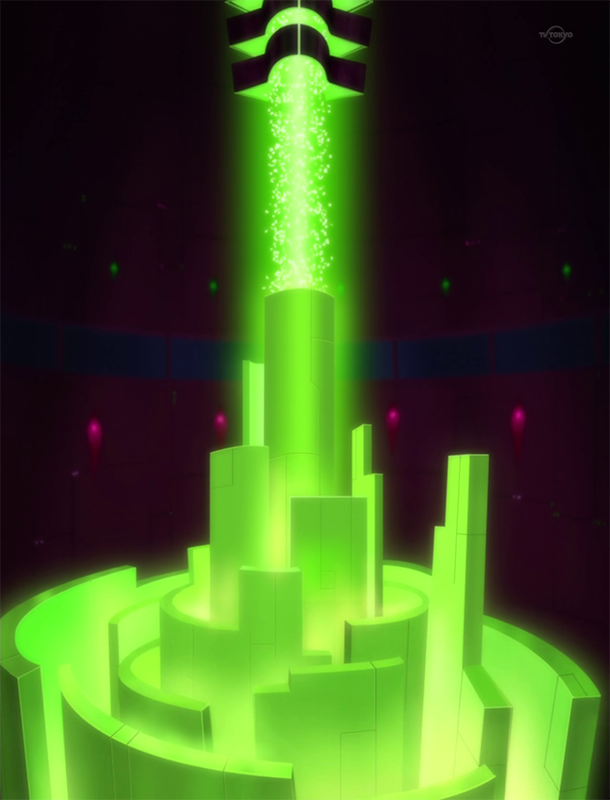. Cette machine était son moyen pour lui de
ramener tout ce qu'il avait perdu: la Dimension Originel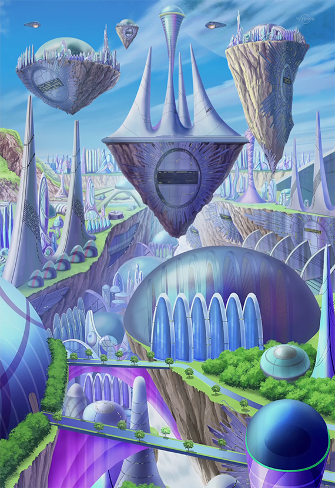 qu'il appelait chez lui,
et plus important encore, sa fille Ray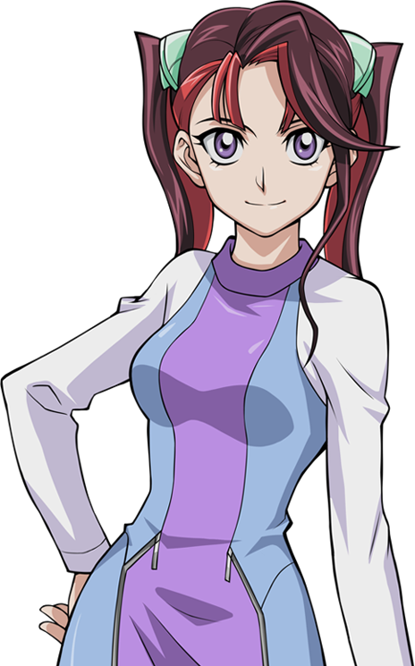.
C'est là qu'intervient l'Arc Area Project. En envahissant les autres dimensions et en scellant des milliers de personnes provenant de ces dimensions dans des cartes, leurs force vitale serait utilisée pour alimenter le réacteur ARC-V dans le but de faire fusionner les 4 dimensions en une seule. Cette même force vitale serait également utilisée pour le Revival Zero, l'initiative visant à faire revivre Ray.
Jusqu'à présent, tout se passait comme prévu. La première invasion de la Dimension Xyz a été un succès et a permis de collecter un grand nombre de cartes scellées pour le projet. Il y avait encore des survivants, mais il savait que ce n'était qu'une question de temps avant qu'ils n'en aient fini avec cette dimension. Puis ils passeront aux autres dimensions. Avant cela, il avait reçu la confirmation de son espion résidant dans la dimension Xyz qu'il avait trouvé la fille qu'on lui avait ordonné de localiser.
Léo savait que, pour faire revivre sa fille, il devait trouver ses fragments. Quand la Dimension Originel s'est divisée en 4, Ray l'a aussi été. Par conséquent, chaque
Dimension avait une fille qui partageait le visage de Ray et l'un des quatre bracelets utilisés pour vaincre le Duelliste Démoniaque,
Zarc .
.
Cet homme serra ses poings de colère en se rappelant ce monstre. C'est à cause de lui que tout cela est arrivé, que Léo a tout perdu... y compris sa précieuse fille. Quand il a découvert que Ray s'était séparé en 4 fragments, il a aussi su que Zarc s'était aussi séparé en 4 fragments. Il savait qu'il fallait les éliminer avec un préjudice extrême s'ils venaient à croiser son chemin.
Heureusement, Leo avait déjà trouvé ces deux fragments en question dans cette dimension. Il avait dû garder l'un d'eux sous clé et sous surveillance extrème, tout le temps, même lorsqu'elle se montrait rebelle à son égard. Il souriait un peu à ce propos. Il se souvenait que Ray était tout aussi difficile à gérer quand elle était jeune. Tous ces jours où il l'a vue grandir et devenir une jeune femme remarquable lui manquent. Bientôt, cette jeune femme sera à nouveau à ses côtés, comme au bon vieux temps...
???: Vous vouliez me voir, Professeur ?
Leo se retourna pour savoir qui lui avait parlé. Il a fait de son mieux pour ne pas froncer les sourcils à la vue du jeune homme. Devant lui se tenait l'autre fragment qu'il avait trouvé. Le garçon avait environ quatorze ans, des cheveux violets et roses, et portait un uniforme militaire violet. Celui-ci afficha un sourire cruel.
Leo:
Yuri , j'ai une mission très importante pour toi. Je viens de recevoir un message de
Dennis McField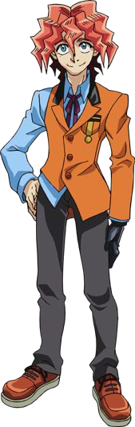
se trouvant dans la dimension Xyz. Il dit qu'il a réussi à localisé une jeune fille que je lui avais demandé de trouver. Retrouve-le là-bas, et il te conduira à elle.
Une fois que tu auras mis la main sur cette fille, ramenes-la moi ici à Academia, vivante et indemne.
, j'ai une mission très importante pour toi. Je viens de recevoir un message de
Dennis McField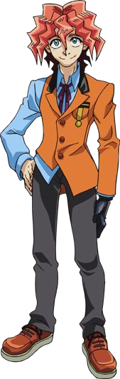
se trouvant dans la dimension Xyz. Il dit qu'il a réussi à localisé une jeune fille que je lui avais demandé de trouver. Retrouve-le là-bas, et il te conduira à elle.
Une fois que tu auras mis la main sur cette fille, ramenes-la moi ici à Academia, vivante et indemne.
Yuri: Vous ne voulez pas que je la scelle dans une carte comme les autres, Professeur ?
Yuri a demandé, curieux de savoir ce qui rendait cette fille si spéciale pour ne la transformer en carte.
Leo: Certainement pas. Elle ne doit pas être bléssée, sous aucun prétexte. J'ai des projets importants pour elle, qui nécessitent qu'elle soit en parfaite santé. Scelle tous ceux et celles qui se mettent en travers de ton chemin, mais cette fille ne doit SURTOUT PAS être blessée ! C'est bien compris, Yuri ?
Leo lui donna son ordre. Yuri souria toujours et s'inclina devant lui.
Yuri: Compris, Professeur. Je ne vous décevrai pas
Yuri appuya alors sur un bouton de son Duel Disk et disparut dans des particules de lumière bleue. Léo soupira en se retournant pour regarder sa machine.
Bien que celui-ci méprisa Zarc, et par extension ses fragments, il admira la loyauté de Yuri à son égard. Il n'avait jamais échoué dans une mission, étant donné qu'il était l'un de ses meilleurs soldats. Pourtant, Leo se justifia d'utiliser le pouvoir de Yuri pour l'aider à mettre en place et à réaliser son projet. Il a été interrompu de nouveau par un autre de ses subordonnés.
Leo: Qu'est-ce que qu'il y a ? demanda Leo alors qu'un écran apparaît devant lui.
Subordonné: Professeur, notre réseau d'espionnage dans la Dimension Synchro vient de nous informer qu'ils ont réussi à trouver une fille possédant le même visage de Dame Serena et portant un bracelet à son poignet droit.
Leo acquiessa la tête.
Leo: Bien. Donnez-moi sa position exacte.
On lui afficha alors une carte numérique de la Dimension Synchro, et en se focalisant sur un cercle rouge clignotant, il vit sa prochaine cible. Le professeur souria.
Leo: Cela fait deux fragments localisées. Une fois que Yuri les aura amenées ici, je n'aurai plus qu'à trouver le quatrième et dernièr fragment...
Akaba Leo savait que son propre espion, envoyé dans la Dimension Standard y rencontrerait sûrement le fragment de Ray. À son retour, il examinera ses souvenirs pour connaître les rencontres qu'il a pu faire avec elle. Puis, quand Yuri l'aura ramenée à Academia, il aura toutes les pièces dont il aura besoin pour ramener Ray.
Leo: Oui. Il ne faudra pas longtemps avant que nous soyons à nouveau ensemble, Ray. Je vais te ramener et restaurer notre vraie maison. Et personne ne se mettra en travers de mon chemin... Non, personne !

Nico Smiley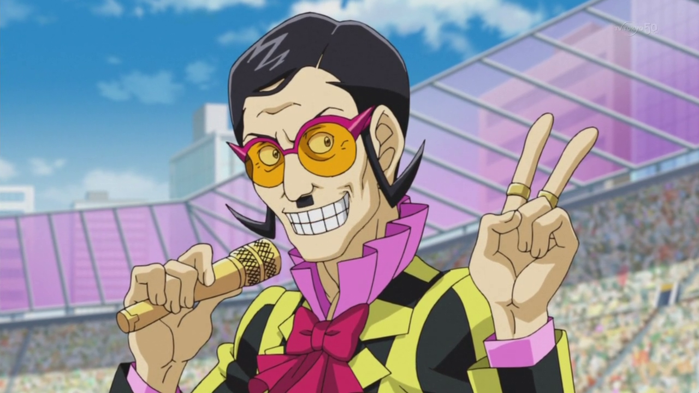 : Et le vainqueur est... Sakaki Yuya !
Sakaki Yuya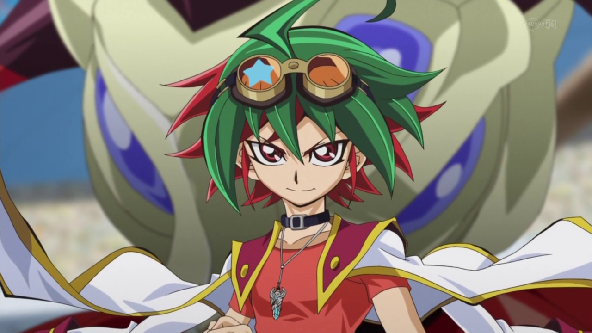, un garçon de 14 ans aux cheveux rouges et verts, sourit alors que la foule l'acclame, après avoir gagné son premier duel avec ses nouvelles cartes Pendulum. Il pouvait voir sa mere et ses amis applaudir sa victoire depuis les tribunes des spectateurs.
Parmi le public, se trouvait un jeune homme, semblant un peu plus agé que Yuya, qui semblait à la fois fatigué et impressionné. Il avait des cheveux foncés et magenta, avec une frange blonde qui pendait et portait une veste bleu foncé sur une chemise noire sans manches et un pantalon bleu foncé. Son détail le plus visible, qui attirait parfois le regard des gens, était une sorte de petite pyramide en or, qu'il portait autour de son cou.
Il pouvait voir la mère de Yuya et ses amis, non loin de là où il était assis. Il a également vu la fille qui encourageait le plus Yuya. Une fille aux cheveux roses avec des couettes saluait Yuya, heureuse qu'il ait gagné et qu'il ait fait sourire les gens qui le regardaient.
Yuzu: Tu as été fantastique ! Bien joué, Yuya ! Pour sûr, tu as vraiment apporter le sourire à tout le monde aujourd'hui !
Le jeune homme a également vu que la fille portait un bracelet à son poignet droit, qui comportait deux pierres roses.
à son poignet droit, qui comportait deux pierres roses.
???: Ce sont eux, Sakaki Yuya et Hiragi Yuzu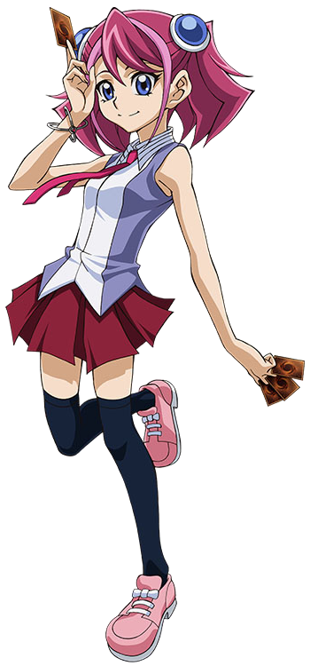 ...
???(2): Oui. Les trouver n'était pas un problème. La vraie difficulté sera de les garder en sécurité, tous les deux. Nous devrons être prêts quand Academia passera à l'action...
Dit une autre voix que seul le jeune homme avec la pyramide pouvait entendre.
???: Ne t'inquiète pas, "Mou Hitori no Boku"..., nous le serons.
(trad: Mou Hitori no Boku = Mon Autre Moi)
Après qu'un grand yacht vienne d'accoster sur l'île où se trouve Academia, tous les nouveaux étudiants commencaient à débarquer. Ils étaient tous excités d'arriver, impatients de commencer leur formation pour devenir des Duellistes professionnels. L'un d'entre eux, un jeune homme aux cheveux bruns qui portait une veste rouge ouverte et un pantalon gris foncé, ne partageait pas leur enthousiasme.
???: Pauvres enfants. Ils n'ont aucune idée du genre d'école de duel qui leurs attends. Je suis content de ne pas avoir à rester ici longtemps.
Le jeune homme pensa, alors qu'il commençait à descendre du bateau, jusqu'au port où les autres étudiants y attendaient eux aussi.
???(2): Bien sûr que non. Une fois que tu auras trouvé Serena et que tu l'auras convaincue de la vérité concernant cet endroit, vous devrez tous les deux fuir, la queue entre les jambes.
Cependant, partir d'ici sera bien plus difficile que d'y entrer...
Répliqua une voix féminine que seul le jeune homme pouvait entendre. Celui-ci soupira.
???: Crois-moi Yubel, je suis bien consciens de cela. J'espère juste que Serena entendra raison quand le moment sera venu...
A peu près au même moment, une fille aux cheveux indigo (enroulés dans une queue de cheval) et à la frange bleu clair a éternué dans sa chambre. En s'essuyant le nez,
Serena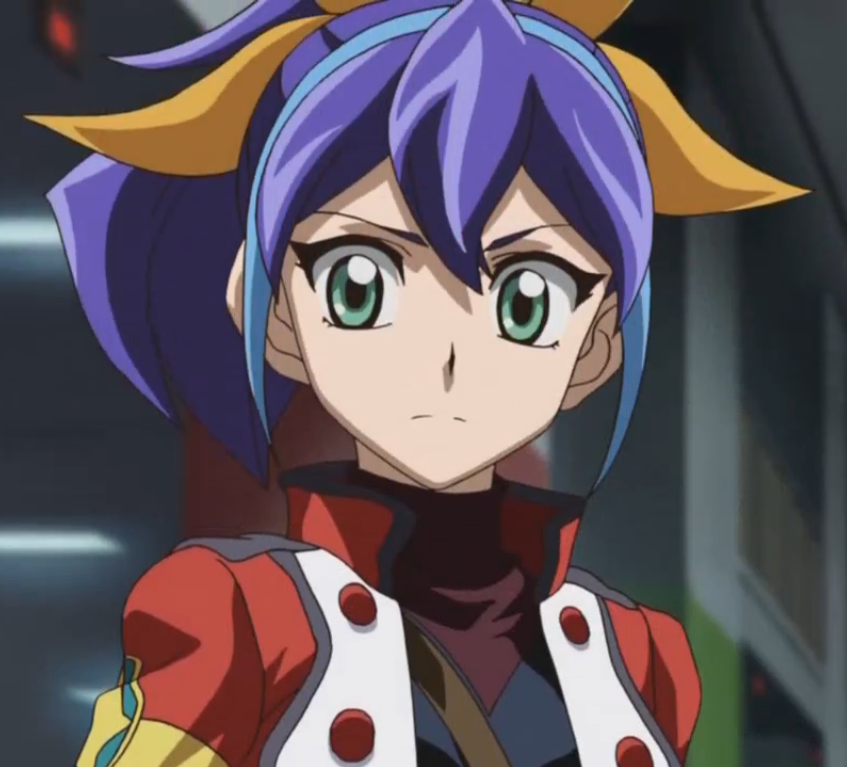 s'est demandé si quelqu'un ne parlait pas d'elle à ce moment-là. Mais elle a ensuite haussé les épaules, pensant que ce n'était pas important.
Elle a alors touché son bracelet de pierres violettes. Elle faisait ça quand quelque chose l'agitait, comme maintenant.
de pierres violettes. Elle faisait ça quand quelque chose l'agitait, comme maintenant.
Serena: Pourquoi devrais-je m'inquiéter si quelqu'un parle de moi ? Ce n'est pas comme si le Professeur me donnait une chance de prouver que je suis digne d'être l'un de ses meilleurs Soldats Duellistes pour le Projet Arc Area. Uggh, j'espère juste que quelque chose va bientôt arriver et changer les choses pour moi..."
Yugo: Hé Rin ! Tu veux des ramen aux crevettes ce soir, ou au poulet ?
! Tu veux des ramen aux crevettes ce soir, ou au poulet ?
Un adolescent aux cheveux bleus et jaunes portant une tenue de course blanche demanda à son amie, alors qu'ils regardaient leurs choix pour leur dîner. Rin, une fille d'environ son âge aux cheveux verts courts et portant une tenue bleu clair et rose, soupira d'exaspération.
Rin: Des ramen ? Encore ? Yugo , nous devons manger des aliments plus sains que ça. En plus, on a mangé des ramen hier soir ! Tu dois manger de la vraie nourriture comme des fruits et des légumes.
Heureusement, je sais où nous pouvons trouver de bons produits. Maintenant, viens !
, nous devons manger des aliments plus sains que ça. En plus, on a mangé des ramen hier soir ! Tu dois manger de la vraie nourriture comme des fruits et des légumes.
Heureusement, je sais où nous pouvons trouver de bons produits. Maintenant, viens !
Rin insista alors qu'elle devait littéralement tirer Yugo par le bras. Son bras droit, qu'elle utilisait pour tirer Yugo, portait un bracelet avec une pierre verte
incrustée dedans.
avec une pierre verte
incrustée dedans.
Yugo: Aw allez, Rin ! Juste une tasse ! Une qui a le King, Jack Atlas , dessiné dessus !
, dessiné dessus !
Yugo le supplia, presque en larmes. Mais Rin ne voulait pas de ça.
Rin: Tu en as déjà une douzaine comme ça à la maison ! Si tu en rajoutes, ils vont commencer à prendre de la place et vont nous ennuyer pour nous déplacer chez nous ! Je te jure Yugo, tu dois vraiment grandir et agir selon ton âge !
Yugo pleura pathétiquement, tandis que Rin le déplaçait vers l'endroit où se trouvaient les produits. Non loin d'eux, un jeune homme de 19 ans, aux cheveux noirs et jaune foncé hérissés, portant une veste de motard bleue et ayant une marque jaune sur le visage, observait le couple qui se chamaillait. Il faisait semblant de faire les courses pour pouvoir les observer sans attirer l'attention sur lui. Il ne pouvait s'empêcher de sourire un peu de leur plaisenteries.
???: Yugo et Rin... Ils forment un couple intéressant. Je sais qu'ils se soucient réelement l'un de l'autre, même s'ils ne sont pas toujours d'accord sur tout. Ils doivent rester ensemble... et je vais m'en assurer personellement.
Il pensait à lui-même en tenant sa main gauche sur son bras droit, où une marque rouge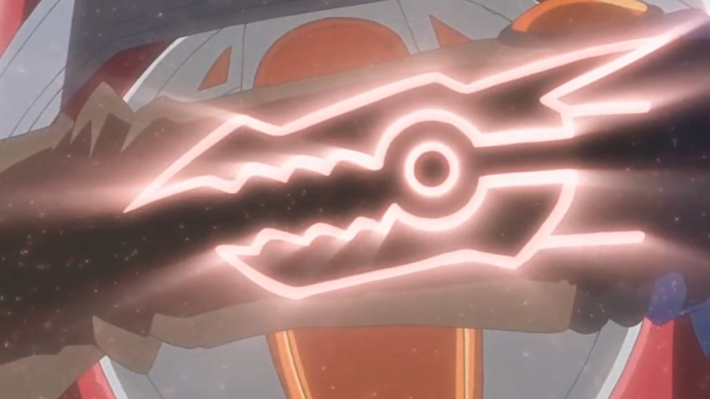 brillait doucement...
Appela une jolie adolescente aux longs cheveux violets foncés et portant des vêtements de couleur claire. Elle agita son bras droit, qui tenait un
bracelet avec une pierre de couleur jaune à l'intérieur. Quelques secondes plus tard, deux jeunes hommes la rejoignirent.
avec une pierre de couleur jaune à l'intérieur. Quelques secondes plus tard, deux jeunes hommes la rejoignirent.
Shun: Ruri ! Quelque chose ne va pas ?
! Quelque chose ne va pas ?
L'homme plus âgé, qui semblait avoir 17 ans environ, a demandé avec beaucoup d'inquiétude. Ruri secoua la tête.
Ruri: Non Shun, j'ai juste besoin d'aide pour obtenir plus de serviettes et de seaux d'eau pour les malades et les blessés.
Ruri a répondu en désignant quelques tentes plus loin. Il y avait beaucoup de tentes comme celle-ci. Considérant qu'ils vivent pratiquement dans une zone de guerre qui était autrefois une ville paisible.
Yuto: Qu'importe ce dont tu as besoin, Ruri, nous ferons tout pour que tu l'obtiennes.
Répondit Yuto, le plus jeune garçon qui avait l'air d'avoir l'âge de Ruri. Il avait des cheveux noirs et violets clairs et portait des vêtements sombres et en lambeaux. De plus, tous les trois portaient des foulards rouges quelque part sur leurs tenues.
Ruri: Je sais. Merci à vous deux.
Disait Ruri alors que les deux couraient pour trouver plus de serviettes et de seaux. A proximité, un garçon un peu plus jeune, de 13 ans, observait le trio depuis
l'autre côté d'une autre tente. Il avait des cheveux noirs courts et hérissés avec une frange rouge sur le devant. Il portait une veste sans manches rouge et un pantalon
blanc avec des flammes dessus. Il avait également une etrange cle doree accrochée à son cou.
accrochée à son cou.
???: Les voilà, Astral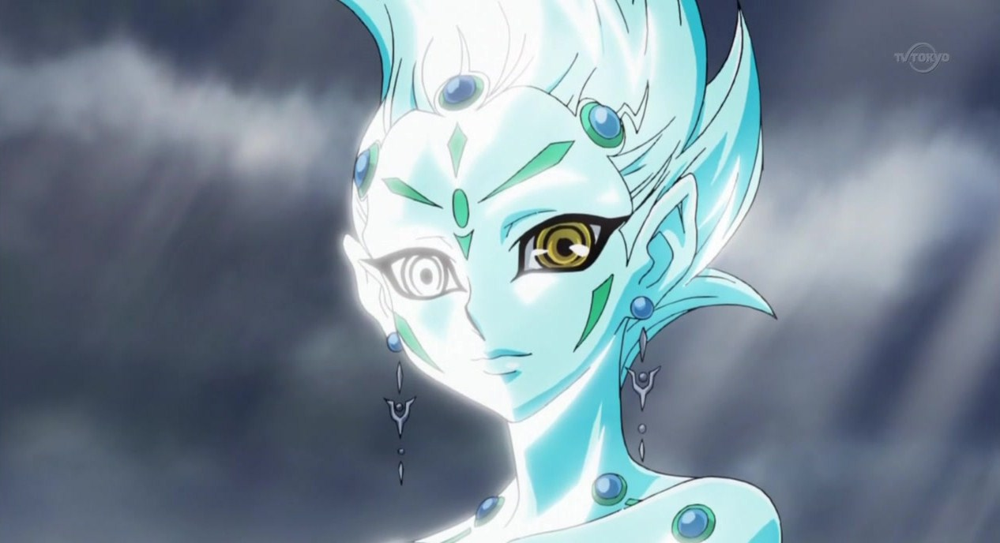.
Il le dit, alors qu'il se tournait vers un être lumineux bleu flottant à côté de lui. Le garçon avec qui il est, était la seule personne présente qui pouvait le voir et l'entendre.
Astral: Oui, Yuto et Ruri Kurosaki. Et l'aîné est son frère et le meilleur ami de Yuto, Shun Kurosaki. Il peut se débrouiller tout seul, mais c'est sur les deux autres que nous devons veiller.
???: Oui, je sais. On doit faire en sorte de les protéger d'Academia. Enfin, plus Ruri que Yuto pour l'instant.
Répondit le garçon, se sentant anxieux.
Astral: Je crois que nous allons devoir bouger plus vite que l'on ne le pense. Regarde, là, à ta droite.
Astral disait, en pointant dans cette direction. Lorsque le garçon se retourna pour voir de quoi Astral parlait, il sursauta et écarquilla les yeux en signe de choc. Il voyait deux jeunes hommes, converser non loin de l'endroit où Ruri recueillait de l'eau. L'un d'eux portait une cape, mais il pouvait encore distinguer son visage.
???: C'est lui... Yuri. Il est déjà là.
Chuchotta notre jeune garçon. Astral acquiessa la tête.
Astral: En effet. Le moment de passez à l'action est arrivé. Es-tu prêt ?
???: Et comment ! Allons-y !